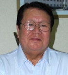
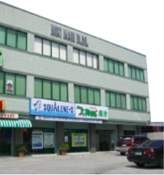

トップページ
>企業情報
社長挨拶

弊社は1977年の創業以来、日本の健康食品や食品の提供を通じて、フィリピンの人々と社会の発展や輝かしい未来の実現に貢献することを目指して参りました。
フィリピンでは、ドラッグストアに日本の健康食品が並び、日本食レストランに行列ができることが当たり前となり、経済環境の変化や健康志向の高まりなども相俟って、日本の食文化に対する関心・需要は更に高まり続けています。また、消費スタイルは日々刻々と多様化し、リアルな店舗だけでなくネットにまで少しずつ広がりを見せています。弊社はこれからも卸流通業として日本食の美味しさと満足を供給することに努め、新たな需要の創造に常に挑戦し続け、日本とフィリピンの人と食の未来への架け橋となることを使命として成長して参ります。
今後も引き続き変わらぬご支援とご愛顧を賜りたく、何卒宜しくお願い申し上げます。
会社概要
会社名
Yamato Enterprises, Inc.住所
Miki Mari Bldg. Sta. Cecilia Rd, Talon Dos, Las Pinas City, Philippinesp代表者
赤窄 勇 （Isamu Akasako）President & General
Manager設立年月日
1977年4月18日資本金
PHP 900,000.00従業員数
32名年商
7億3000万円（2015年度実績）主要取引銀行
BANCO DE ORO, METRO BANK, BANK OF THE PHILIPPINES主な仕入先
吉川商事株式会社、DIC株式会社、三協株式会社など主な販売店
フィリピン国内の薬局チェーン店等2,600店、日系ホテルやレストランなど多数流通拠点
横浜・神戸の2か所

Yamatoグループ本社
沿革
- 1976年日本料理レストラン「フジヤマ」を開店、以後4年で6店舗をオープン
- 1977年Yamato Enterprises, Inc. を設立
- 1978年深海サメ肝油の生産・輸出を開始。主な輸出先：新日本石油化学(株)
- 1980年深海サメ肝油の健康食品「スクアレン」の輸入・販売を開始
- 1985年大日本インキ化学（現、DIC株式会社）とフィリピンにおける健康食品の代理店契約を締結し、健康食品「スピルナ」等の輸入・販売を開始
- 1996年日本食品の輸入販売開始、取扱品目800種以上日本食材グロッサリーストア「だるま屋」をCartimarにオープン
- 2005年日本の食品、健康食品の輸入卸売業に専念
- 2013年製麺所を設立。フィリピン国内の飲食店に生麺や餃子の皮の販売開始
食品部門
食品販売「だるま屋」

住所 Unit 5,Plaa Cartimar, Cartimar Avenue., Pasay City
社会貢献活動
弊社は、フィリピンに恩返ししたいという思いから社会 献活動として、2002年にイロイロ州ランプナオ市学校(ハ イスクール) 設立に協力いたしました。 未来ある子供たち に学ぶ機会をつくり､それぞれの人生で輝く星になってほ しいという願いを込めて教育支援に取り組んでいます。 現 在は、約1,000人の子どもたちが学んでいます。